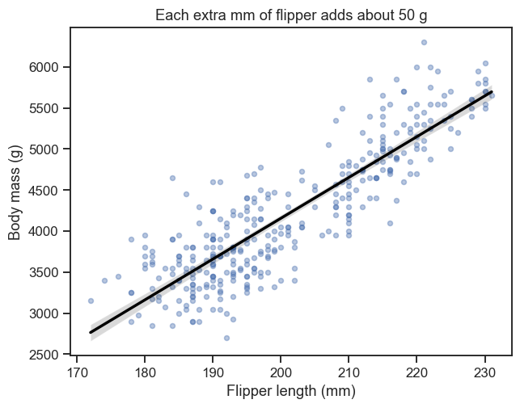
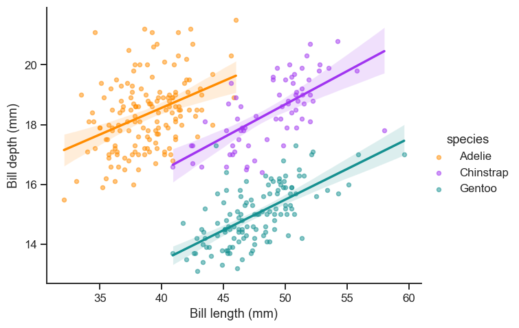
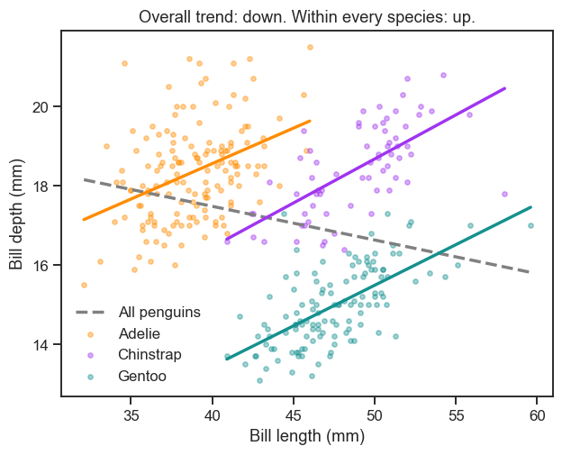
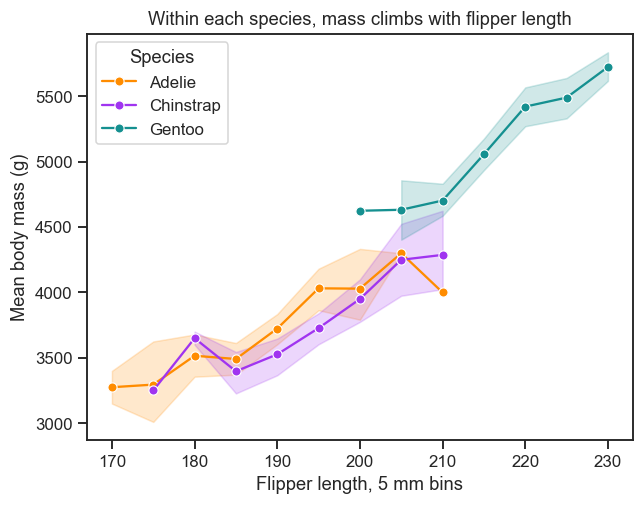
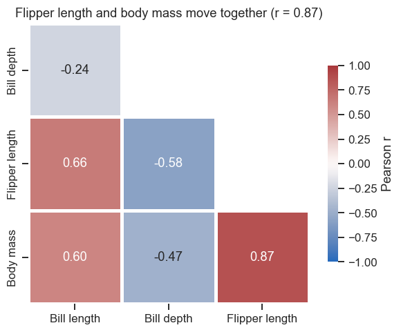
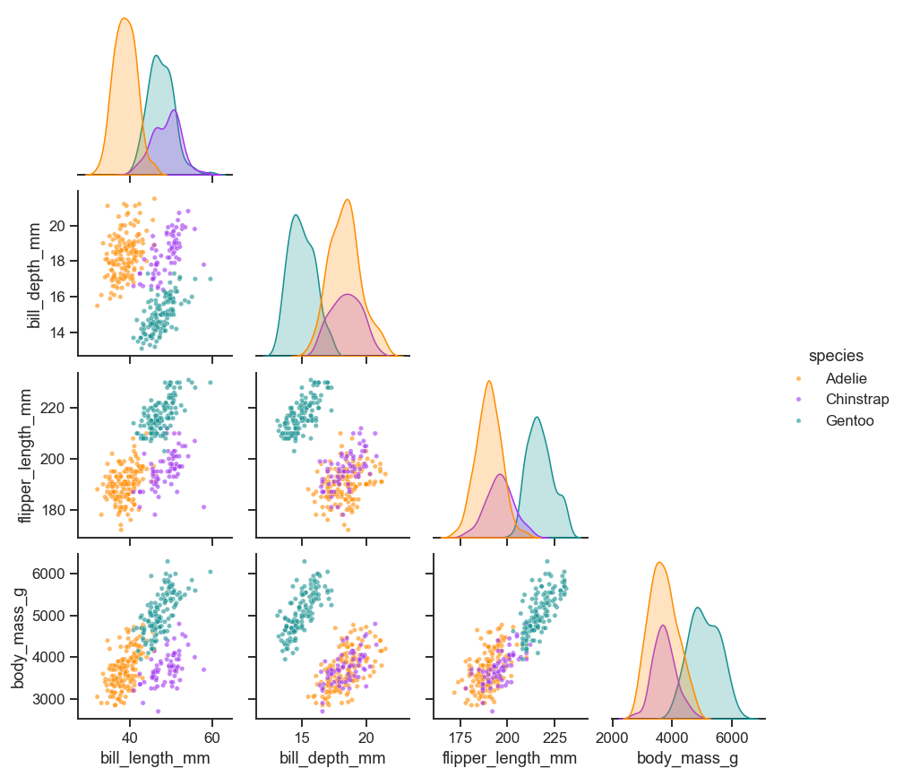
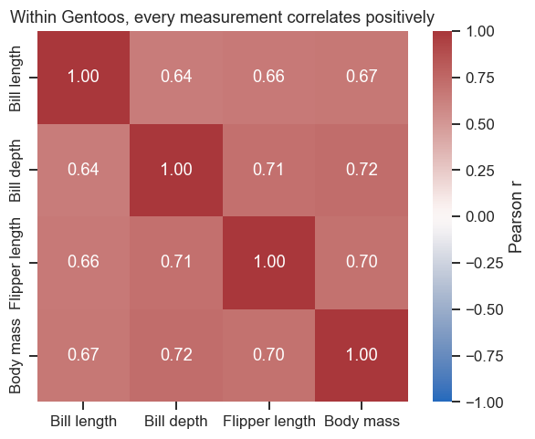
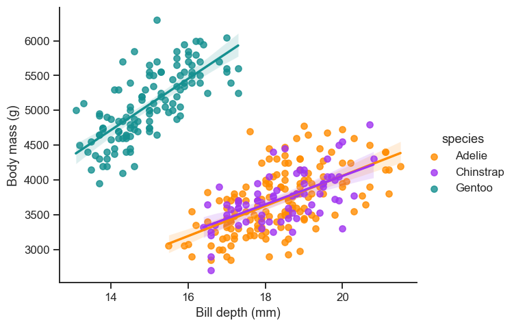

Lesson 4 - Relationships: trends, lines and correlations
Do bigger flippers mean heavier penguins? How tightly do all the measurements move together? This lesson adds trend lines, line charts, correlation heatmaps and the "everything at once" pair plot to your toolkit.
By the end of this lesson you can:
- add a fitted trend with
regplot/lmplotand explain its shaded band - use
lineplotonly where connecting the dots is meaningful - build a correlation heatmap with a diverging palette centered on zero
- scan every pairwise relationship at once with
pairplot
import numpy as np
import pandas as pd
import matplotlib.pyplot as plt
import seaborn as sns
sns.set_theme(style="ticks")
penguins = sns.load_dataset("penguins")
PENGUIN_COLORS = {"Adelie": "#FF8C00", "Chinstrap": "#A034F0", "Gentoo": "#159090"}
SEX_COLORS = {"Female": "#8c8c8c", "Male": "#333333"}
A trend line with regplot
ax = sns.regplot(data=penguins, x="flipper_length_mm", y="body_mass_g",
scatter_kws={"alpha": 0.4, "s": 15}, line_kws={"color": "black"})
ax.set(xlabel="Flipper length (mm)", ylabel="Body mass (g)",
title="Each extra mm of flipper adds about 50 g")

regplot fits a straight line by least squares and shades a 95% confidence interval for the line. That band shows where the average trend plausibly lies, not where individual penguins fall. Notice how much narrower it is than the cloud of points.
A fitted line is a model, not the data
regplot draws a straight line through anything, even curved or clustered data. Look at the points first. Then ask whether a single line is honest, or whether groups need their own lines.
One line per group with lmplot
lmplot is the figure-level sibling of regplot (more on figure-level functions in Lesson 5). It understands hue, so you get one fit per species:
g = sns.lmplot(data=penguins, x="bill_length_mm", y="bill_depth_mm",
hue="species", palette=PENGUIN_COLORS, height=4.5, aspect=1.3,
scatter_kws={"alpha": 0.5, "s": 15})
g.set_axis_labels("Bill length (mm)", "Bill depth (mm)")
g.legend.set_title("Species")

lmplot returns a grid object, not an Axes, so the labels go through the grid: g.set_axis_labels(...) for the axes and g.legend for the legend.
The paradox, in one picture
Remember Lesson 1’s bill paradox? Draw the overall fit and the per-species fits on the same Axes and it jumps out:
ax = sns.regplot(data=penguins, x="bill_length_mm", y="bill_depth_mm", scatter=False, ci=None,
line_kws={"color": "gray", "linestyle": "--"}, label="All penguins")
for species, group in penguins.groupby("species"):
sns.regplot(data=group, x="bill_length_mm", y="bill_depth_mm", ax=ax, ci=None,
color=PENGUIN_COLORS[species], label=species, scatter_kws={"s": 12, "alpha": 0.4})
ax.legend(frameon=False)
ax.set(xlabel="Bill length (mm)", ylabel="Bill depth (mm)",
title="Overall trend: down. Within every species: up.")

Two useful patterns here: calling seaborn several times on the same ax, and looping over groupby to control each group exactly.
Line charts: only when the x-axis has an order
A line says “follow me from left to right.” That only makes sense when x is ordered: time, a dose, or a binned measurement. Penguins weren’t measured over time here, but flipper length is ordered. Bin it and plot the average mass per bin:
binned = penguins.assign(flipper_bin=(penguins["flipper_length_mm"] // 5) * 5)
ax = sns.lineplot(data=binned, x="flipper_bin", y="body_mass_g",
hue="species", palette=PENGUIN_COLORS, marker="o")
ax.set(xlabel="Flipper length, 5 mm bins", ylabel="Mean body mass (g)",
title="Within each species, mass climbs with flipper length")
ax.get_legend().set_title("Species")

lineplot aggregates repeated x values (here, several penguins per bin) to a mean, and shades a 95% CI band. Pass errorbar=None to drop the band, or errorbar="sd" to show spread. Notice the ragged ends: the extreme bins hold only one or two penguins, so their means jump around and the band vanishes where there is a single bird. Small groups deserve a caveat in the caption, or a minimum count before you plot them.
Don’t connect unordered categories
Lines between “Biscoe”, “Dream” and “Torgersen” would suggest a path through islands. No such path exists. For nominal categories, use bars or dots.
Correlation heatmaps
A correlation matrix gives a single number for every pair of numeric columns. A heatmap makes it scannable:
nice = {"bill_length_mm": "Bill length", "bill_depth_mm": "Bill depth",
"flipper_length_mm": "Flipper length", "body_mass_g": "Body mass"}
corr = penguins.select_dtypes("number").rename(columns=nice).corr()
lower = corr.iloc[1:, :-1] # drop the always-empty row and column
mask = np.triu(np.ones_like(lower, dtype=bool), k=1) # hide the mirror-image upper half
ax = sns.heatmap(lower, mask=mask, annot=True, fmt=".2f", cmap="vlag",
center=0, vmin=-1, vmax=1, square=True, linewidths=2,
cbar_kws={"shrink": 0.7, "label": "Pearson r"})
ax.set(title="Flipper length and body mass move together (r = 0.87)")

The settings that make this honest:
cmap="vlag"withcenter=0. This is a diverging palette. Blue means negative, red means positive, and near-white means “no relationship.” A rainbow palette would give zero a random hue.vmin=-1, vmax=1. Colors mean the same thing on every heatmap you make.annot=True. Color gives the pattern and the printed numbers give exact values.maskand the slice. A correlation matrix is symmetric and its diagonal is always 1, so show each pair once and skip the rest.
Bill depth correlates negatively with mass overall (−0.47). By now you can probably guess why that’s misleading.
Everything at once: pairplot
g = sns.pairplot(penguins, hue="species", palette=PENGUIN_COLORS,
corner=True, height=2, plot_kws={"s": 12, "alpha": 0.6})

A pair plot is an exploration tool. It’s great for your first ten minutes with a dataset, but too dense for a presentation. That’s why this one keeps the raw column names: it’s for your eyes, not an audience’s. Notice how clearly the three species separate on the bill length panels.
Your turn
Show a solution
gentoo = penguins[penguins["species"] == "Gentoo"]
# Optional polish from the lesson: plain-English names and a labeled colorbar.
nice = {"bill_length_mm": "Bill length", "bill_depth_mm": "Bill depth",
"flipper_length_mm": "Flipper length", "body_mass_g": "Body mass"}
corr = gentoo.select_dtypes("number").rename(columns=nice).corr()
ax = sns.heatmap(corr, annot=True, fmt=".2f", cmap="vlag",
center=0, vmin=-1, vmax=1, square=True,
cbar_kws={"label": "Pearson r"})
ax.set(title="Within Gentoos, every measurement correlates positively")

Show a solution
g = sns.lmplot(data=penguins, x="bill_depth_mm", y="body_mass_g",
hue="species", palette=PENGUIN_COLORS, height=4.5, aspect=1.3)
g.set_axis_labels("Bill depth (mm)", "Body mass (g)")
g.legend.set_title("Species")

Quick quiz
Q1. When is a line chart (lineplot) the right choice?
Q2. Why use a diverging palette such as vlag with center=0 for a correlation heatmap?
Q3. What does the shaded band around a regplot line show by default?
Q4. What does corner=True do in sns.pairplot?
corner=True hides them.Key takeaways
regplot/lmplotadd a fitted line plus a confidence band for the line. Usehue(inlmplot) or agroupbyloop for per-group fits.- Only connect points with
lineplotwhen x is ordered. - Correlation heatmaps: diverging palette,
center=0, fixedvmin/vmax, annotate, mask the mirror half. pairplotis for exploring, not presenting.